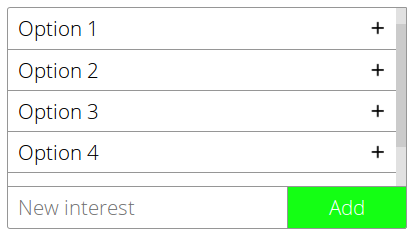

Fancy Multiple Select, acts as a replacement for normal multiple selects.
Fancy multiple select turns multiple selects into an easy to style alternative. Fancy multiple select has the ability to search and the ability to add new options.
<script src="jquery.min.js"></script>
<script src="jquery.searchMultipleSelect.min.js"></script>
<link rel="stylesheet" type="text/css" href="searchMultipleSelect.min.css"></link>
It's simple, just use a normal multiple select.
<select multiple="true">
<option>Option 1</option>
<option>Option 2</option>
<option>Option 3</option>
<option>Option 4</option>
</select>
Call the fancyMultipleSelect function on a jQuery object of selects you want to fancify.
$("select[multiple]").fancyMultipleSearch();
